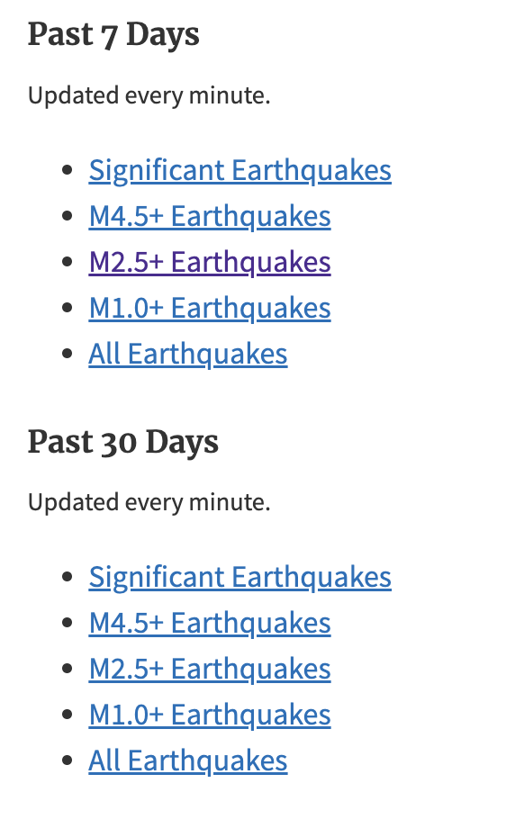
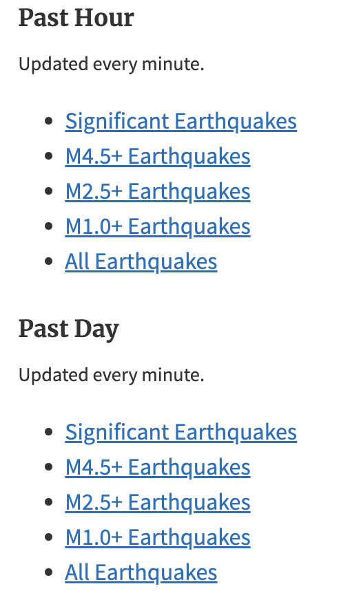
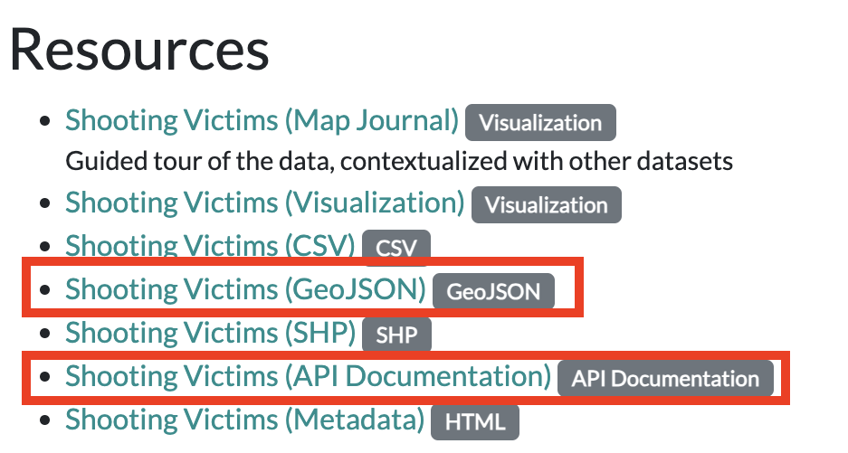
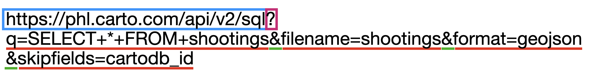
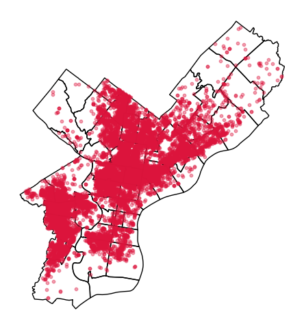
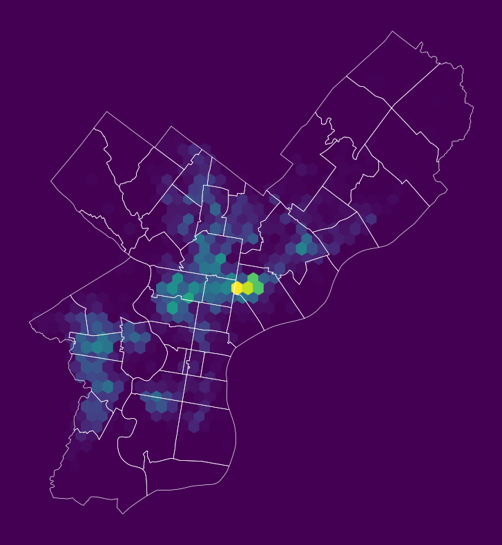
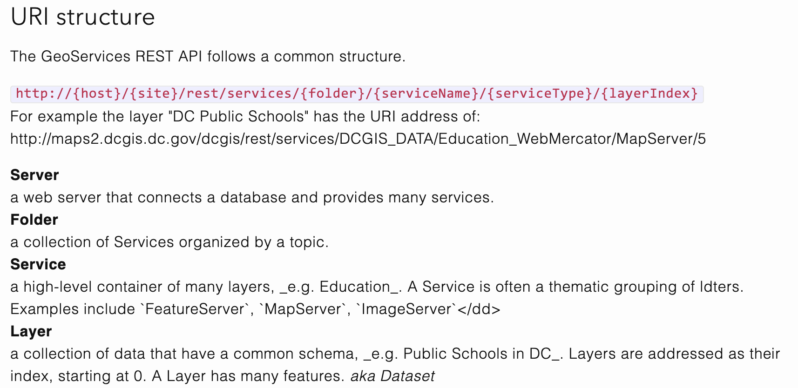
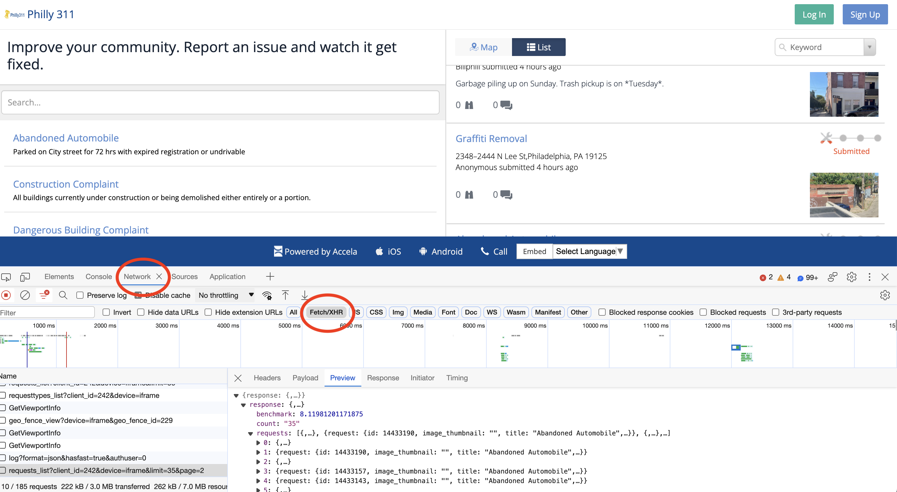
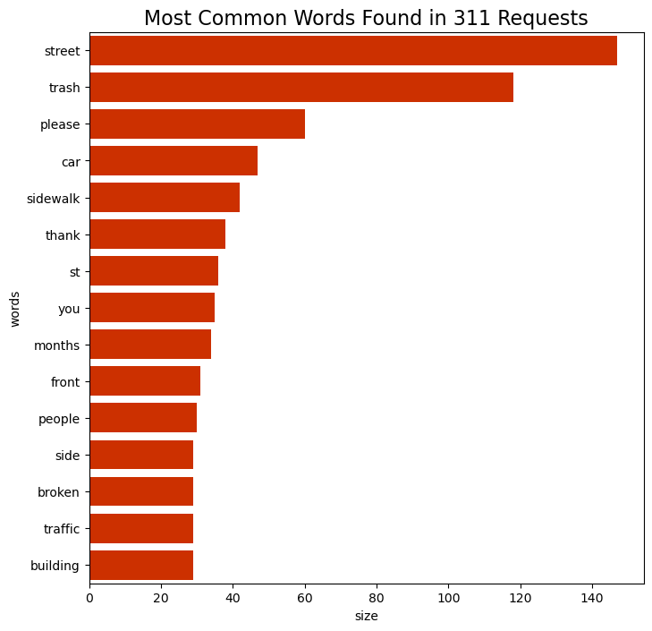

Show Code
# !pip install holoviews
# !pip install hvplot
# !pip install seabornIntroduction to APIs
Natural language processing via Philly’s 311 API
Pulling census data and shape files using Python
Update your local environment!
# !pip install holoviews
# !pip install hvplot
# !pip install seabornimport geopandas as gpd
import holoviews as hv
import hvplot.pandas
import numpy as np
import pandas as pd
import seaborn as sns
from matplotlib import pyplot as plt# Show all columns
pd.options.display.max_columns = 999Or, how to pull data from the web using Python
Application programming interface (API):
(noun): A particular set of rules and specifications that software programs can follow to communicate with each other and exchange data.
Example APIs
When accessing data via API, many services will require you to register an API key to prevent you from overloading the service with requests.
The simplest form of API is when data providers maintain data files via a URL that are automatically updated with new data over time.
This is an API for near-real-time data about earthquakes, and data is provided in GeoJSON format over the web.
The API has a separate endpoint for each version of the data that users might want. No authentication is required.
API documentation:
http://earthquake.usgs.gov/earthquakes/feed/v1.0/geojson.php
Sample API endpoint, for magnitude 4.5+ earthquakes in past day:
http://earthquake.usgs.gov/earthquakes/feed/v1.0/summary/4.5_day.geojson
GeoPandas can read GeoJSON files from the web directly. Simply pass the URL to the gpd.read_file() function:
# Download data on magnitude 2.5+ quakes from the past week
endpoint_url = (
"http://earthquake.usgs.gov/earthquakes/feed/v1.0/summary/2.5_week.geojson"
)
earthquakes = gpd.read_file(endpoint_url)earthquakes.head()| id | mag | place | time | updated | tz | url | detail | felt | cdi | mmi | alert | status | tsunami | sig | net | code | ids | sources | types | nst | dmin | rms | gap | magType | type | title | geometry | |
|---|---|---|---|---|---|---|---|---|---|---|---|---|---|---|---|---|---|---|---|---|---|---|---|---|---|---|---|---|
| 0 | ak025du2z1qg | 3.00 | 44 km SE of Denali National Park, Alaska | 1761671701612 | 1761672366332 | None | https://earthquake.usgs.gov/earthquakes/eventp... | https://earthquake.usgs.gov/earthquakes/feed/v... | 1.0 | 2.7 | NaN | None | automatic | 0 | 139 | ak | 025du2z1qg | ,ak025du2z1qg, | ,ak, | ,dyfi,origin,phase-data, | NaN | NaN | 1.16 | NaN | ml | earthquake | M 3.0 - 44 km SE of Denali National Park, Alaska | POINT Z (-151.0773 63.2645 0) |
| 1 | uu80120511 | 2.51 | 23 km SSW of Mammoth, Wyoming | 1761664266780 | 1761666536050 | None | https://earthquake.usgs.gov/earthquakes/eventp... | https://earthquake.usgs.gov/earthquakes/feed/v... | NaN | NaN | NaN | None | reviewed | 0 | 97 | uu | 80120511 | ,uu80120511, | ,uu, | ,origin,phase-data, | 28.0 | 0.007198 | 0.16 | 107.0 | ml | earthquake | M 2.5 - 23 km SSW of Mammoth, Wyoming | POINT Z (-110.84617 44.79483 5.22) |
| 2 | us6000rjx3 | 6.40 | Banda Sea | 1761662418679 | 1761674763920 | None | https://earthquake.usgs.gov/earthquakes/eventp... | https://earthquake.usgs.gov/earthquakes/feed/v... | 12.0 | 3.2 | 4.305 | green | reviewed | 0 | 634 | us | 6000rjx3 | ,us6000rjx3, | ,us, | ,dyfi,ground-failure,losspager,moment-tensor,o... | 105.0 | 2.143000 | 1.03 | 19.0 | mww | earthquake | M 6.4 - Banda Sea | POINT Z (130.0038 -6.6774 143.626) |
| 3 | uu80120481 | 3.70 | 22 km SSW of Mammoth, Wyoming | 1761657748520 | 1761667208000 | None | https://earthquake.usgs.gov/earthquakes/eventp... | https://earthquake.usgs.gov/earthquakes/feed/v... | 8.0 | 3.1 | 4.389 | None | reviewed | 0 | 213 | uu | 80120481 | ,uu80120481,us6000rjwu, | ,uu,us, | ,dyfi,moment-tensor,origin,phase-data,shakemap, | 34.0 | 0.014160 | 0.19 | 110.0 | ml | earthquake | M 3.7 - 22 km SSW of Mammoth, Wyoming | POINT Z (-110.84533 44.802 7.16) |
| 4 | nc75255701 | 2.60 | 8 km NW of Pinnacles, CA | 1761657682650 | 1761672134012 | None | https://earthquake.usgs.gov/earthquakes/eventp... | https://earthquake.usgs.gov/earthquakes/feed/v... | 2.0 | 2.0 | NaN | None | automatic | 0 | 104 | nc | 75255701 | ,nc75255701, | ,nc, | ,dyfi,focal-mechanism,nearby-cities,origin,pha... | 54.0 | 0.016330 | 0.16 | 56.0 | md | earthquake | M 2.6 - 8 km NW of Pinnacles, CA | POINT Z (-121.2015 36.58167 6.36) |
Let’s explore the data interactively with Folium:
# !pip install folium matplotlib mapclassify
# !pip install foliumfrom mapclassify import classifyearthquakes.explore()
# earthquakes.plot()Lots of other automated feeds available, updated every minute:


For example: shooting victims in Philadelphia
https://www.opendataphilly.org/dataset/shooting-victims
and the API documentation:
https://cityofphiladelphia.github.io/carto-api-explorer/#shootings
Let’s take a look at the download URL for the data in the GeoJSON format:


So, let’s break down the URL into its component parts:
# The API endpoint
carto_api_endpoint = "https://phl.carto.com/api/v2/sql"
# The query parameters
params = {
"q": "SELECT * FROM shootings",
"format": "geojson",
"skipfields": "cartodb_id",
# Note: we won't need the filename parameter, since we're not saving the data to a file
# "filename": "shootings"
}The q parameter is a SQL query. It allows you to select a specific subset of data from the larger database.
CARTO API documentation: https://carto.com/developers/sql-api/
SQL documentation: https://www.postgresql.org/docs/9.1/sql.html
General Query Syntax
SELECT [field names] FROM [table name] WHERE [query]
We’ll use Python’s requests library to use a “get” request to query the API endpoint with our desired query. Similar to our web scraping requests!
import requestsLet’s make the get request and pass the query parameters via the params keyword:
response = requests.get(carto_api_endpoint, params=params)
response<Response [200]># Get the returned data in JSON format
# This is a dictionary
features = response.json()type(features)dict# What are the keys?
list(features.keys())['type', 'features']features["type"]'FeatureCollection'# Let's look at the first feature
features["features"][0]{'type': 'Feature',
'geometry': {'type': 'Point', 'coordinates': []},
'properties': {'objectid': 1,
'year': 2015,
'dc_key': '201502025314.00000000',
'code': '100',
'date_': '2015-04-23T00:00:00Z',
'time': '22:30:00',
'race': 'A',
'sex': 'M',
'age': '49',
'wound': 'Shoulder',
'officer_involved': 'N',
'offender_injured': 'N',
'offender_deceased': 'N',
'location': '500 BLOCK Hill Creek Pk',
'latino': 0,
'point_x': None,
'point_y': None,
'dist': '2',
'inside': 0,
'outside': 1,
'fatal': 1}}Use the GeoDataFrame.from_features() function to create a GeoDataFrame.
shootings = gpd.GeoDataFrame.from_features(features, crs="EPSG:4326")Don’t forget to specify the CRS of the input data when using GeoDataFrame.from_features().
shootings.head()| geometry | objectid | year | dc_key | code | date_ | time | race | sex | age | wound | officer_involved | offender_injured | offender_deceased | location | latino | point_x | point_y | dist | inside | outside | fatal | |
|---|---|---|---|---|---|---|---|---|---|---|---|---|---|---|---|---|---|---|---|---|---|---|
| 0 | POINT EMPTY | 1 | 2015 | 201502025314.00000000 | 100 | 2015-04-23T00:00:00Z | 22:30:00 | A | M | 49 | Shoulder | N | N | N | 500 BLOCK Hill Creek Pk | 0.0 | NaN | NaN | 2 | 0.0 | 1.0 | 1.0 |
| 1 | POINT (-75.09999 40.04494) | 2 | 2015 | 201502029653.00000000 | 100 | 2015-05-10T00:00:00Z | 09:47:00 | B | M | 23 | Leg | N | N | N | 6000 BLOCK Colgate St | 0.0 | -75.099990 | 40.044941 | 2 | 0.0 | 1.0 | 1.0 |
| 2 | POINT (-75.15781 39.92445) | 3 | 2015 | 201503024488.00000000 | 400 | 2015-04-23T00:00:00Z | 18:00:00 | B | M | 21 | Head | N | N | N | 1900 BLOCK S 7th St | 0.0 | -75.157809 | 39.924446 | 3 | 0.0 | 1.0 | 0.0 |
| 3 | POINT (-74.98388 40.07898) | 4 | 2015 | 201508041799.00000000 | 100 | 2015-11-02T00:00:00Z | 20:35:00 | B | M | 21 | Chest | N | N | N | 10800 BLOCK E Keswick St | 0.0 | -74.983880 | 40.078980 | 8 | 0.0 | 1.0 | 1.0 |
| 4 | POINT (-75.22943 39.93816) | 5 | 2015 | 201512039279.00000000 | 400 | 2015-05-22T00:00:00Z | 07:11:00 | B | M | 63 | Neck | N | N | N | 5700 BLOCK Windsor St | 0.0 | -75.229433 | 39.938158 | 12 | 1.0 | 0.0 | 0.0 |
Step 1: Prep the data
# make sure we remove missing geometries
shootings = shootings.dropna(subset=["geometry"])
# convert to a better CRS
shootings = shootings.to_crs(epsg=3857)city_limits = gpd.read_file(
"https://opendata.arcgis.com/datasets/405ec3da942d4e20869d4e1449a2be48_0.geojson"
).to_crs(epsg=3857)# Remove any shootings that are outside the city limits
shootings = gpd.sjoin(shootings, city_limits, predicate="within", how="inner").drop(
columns=["index_right"]
)Step 2: Plot the points
A quick plot with geopandas to show the shootings as points, and overlay Philadelphia ZIP codes.
# From Open Data Philly
zip_codes = gpd.read_file(
"https://opendata.arcgis.com/datasets/b54ec5210cee41c3a884c9086f7af1be_0.geojson"
).to_crs(epsg=3857)fig, ax = plt.subplots(figsize=(6, 6))
# ZIP Codes
zip_codes.to_crs(epsg=3857).plot(ax=ax, facecolor="none", edgecolor="black")
# Shootings
shootings.plot(ax=ax, color="crimson", markersize=10, alpha=0.4)
ax.set_axis_off()
Step 3: Make a (more useful) hex bin map
# Initialize the axes
fig, ax = plt.subplots(figsize=(10, 10), facecolor=plt.get_cmap("viridis")(0))
# Convert to Web Mercator and plot the hexbins
x = shootings.geometry.x
y = shootings.geometry.y
ax.hexbin(x, y, gridsize=40, mincnt=1, cmap="viridis")
# overlay the city limits
zip_codes.to_crs(epsg=3857).plot(
ax=ax, facecolor="none", linewidth=0.5, edgecolor="white"
)
ax.set_axis_off()
The SQL COUNT function can be applied to count all rows.
response = requests.get(
carto_api_endpoint, params={"q": "SELECT COUNT(*) FROM shootings"}
)response.json(){'rows': [{'count': 17299}],
'time': 0.006,
'fields': {'count': {'type': 'number', 'pgtype': 'int8'}},
'total_rows': 1}It’s always a good idea to check how many rows you might be downloading before requesting all of the data from an API!
The LIMIT function limits the number of returned rows. It is very useful for taking a quick look at the format of a database.
# Limit the returned data to only 1 row
query = "SELECT * FROM shootings LIMIT 1"
# Make the request
params = {"q": query, "format": "geojson"}
response = requests.get(carto_api_endpoint, params=params)Create the GeoDataFrame:
df = gpd.GeoDataFrame.from_features(response.json(), crs="EPSG:4326")
df| geometry | cartodb_id | objectid | year | dc_key | code | date_ | time | race | sex | age | wound | officer_involved | offender_injured | offender_deceased | location | latino | point_x | point_y | dist | inside | outside | fatal | |
|---|---|---|---|---|---|---|---|---|---|---|---|---|---|---|---|---|---|---|---|---|---|---|---|
| 0 | POINT EMPTY | 1 | 1 | 2015 | 201502025314.00000000 | 100 | 2015-04-23T00:00:00Z | 22:30:00 | A | M | 49 | Shoulder | N | N | N | 500 BLOCK Hill Creek Pk | 0 | None | None | 2 | 0 | 1 | 1 |
Use the WHERE function to select a subset where the logical condition is true.
Example #1: Select nonfatal shootings only
# Select nonfatal shootings only
query = "SELECT * FROM shootings WHERE fatal = 0"# Make the request
params = {"q": query, "format": "geojson"}
response = requests.get(carto_api_endpoint, params=params)
# Make the GeoDataFrame
nonfatal = gpd.GeoDataFrame.from_features(response.json(), crs="EPSG:4326")
# Print
print("number of nonfatal shootings = ", len(nonfatal))number of nonfatal shootings = 13553Example #2: Select shootings in 2023
# Select based on "date_"
query = "SELECT * FROM shootings WHERE date_ >= '1/1/23'"# Make the request
params = {"q": query, "format": "geojson"}
response = requests.get(carto_api_endpoint, params=params)
# Make the GeoDataFrame
shootings_2023 = gpd.GeoDataFrame.from_features(response.json(), crs="EPSG:4326")
# Print
print("number of shootings in 2023 = ", len(shootings_2023))number of shootings in 2023 = 3608DateTime objectsAdd Month and Day of Week columns
# Condddvert the data column to a datetime object
shootings["date"] = pd.to_datetime(shootings["date_"])# Add new columns: Month and Day of Week
shootings["Month"] = shootings["date"].dt.month
shootings["Day of Week"] = shootings["date"].dt.dayofweek # Monday is 0, Sunday is 6Use the familiar Groupby –> size()
count = shootings.groupby(["Month", "Day of Week"]).size()
count = count.reset_index(name="Count")
count.head()| Month | Day of Week | Count | |
|---|---|---|---|
| 0 | 1 | 0 | 198 |
| 1 | 1 | 1 | 169 |
| 2 | 1 | 2 | 161 |
| 3 | 1 | 3 | 168 |
| 4 | 1 | 4 | 164 |
hvplot# Remember 0 is Monday and 6 is Sunday
count.hvplot.heatmap(
x="Day of Week",
y="Month",
C="Count",
cmap="viridis",
width=400,
height=500,
flip_yaxis=True,
)Trends: more shootings on the weekends and in the summer months
A GeoService is a standardized format for returning GeoJSON files over the web
Originally developed by Esri, in 2010 the specification was transferred to the Open Web Foundation.
Documentation: http://geoservices.github.io/
OpenDataPhilly provides GeoService API endpoints for the geometry hosted on its platform
https://opendataphilly.org/datasets/philadelphia-neighborhoods/
# The base URL for the neighborhoods layer
neighborhood_url = "https://services1.arcgis.com/a6oRSxEw6eIY5Zfb/arcgis/rest/services/Philadelphia_Neighborhoods/FeatureServer/0"
query/ endpointLayers have a single endpoint for requesting features: the /query endpoint.
neighborhood_query_endpoint = neighborhood_url + "/query"neighborhood_query_endpoint'https://services1.arcgis.com/a6oRSxEw6eIY5Zfb/arcgis/rest/services/Philadelphia_Neighborhoods/FeatureServer/0/query'The main request parameters are:
where: A SQL-like string to select a subset of features; to get all data, use 1=1 (always True)outFields: The list of columns to return; to get all, use *f: The returned format; for GeoJSON, use “geojson”outSR: The desired output CRSparams = {
"where": "1=1", # Give me all rows
"outFields": "*", # All fields
"f": "geojson", # GeoJSON format
"outSR": "4326", # The desired output CRS
}Make the request:
r = requests.get(neighborhood_query_endpoint, params=params)Get the features and create the GeoDataFrame:
json = r.json()
features = json["features"]hoods = gpd.GeoDataFrame.from_features(features, crs="EPSG:4326")hoods| geometry | FID | NAME | LISTNAME | MAPNAME | Shape_Leng | Shape__Area | Shape__Length | |
|---|---|---|---|---|---|---|---|---|
| 0 | POLYGON ((-75.06773 40.0054, -75.06765 40.0052... | 1 | BRIDESBURG | Bridesburg | Bridesburg | 27814.546521 | 7.066581e+06 | 11074.587308 |
| 1 | POLYGON ((-75.0156 40.09487, -75.01768 40.0927... | 2 | BUSTLETON | Bustleton | Bustleton | 48868.458365 | 1.812721e+07 | 19485.686530 |
| 2 | POLYGON ((-75.18848 40.07273, -75.18846 40.072... | 3 | CEDARBROOK | Cedarbrook | Cedarbrook | 20021.415802 | 3.950980e+06 | 7980.051802 |
| 3 | POLYGON ((-75.21221 40.08603, -75.21211 40.086... | 4 | CHESTNUT_HILL | Chestnut Hill | Chestnut Hill | 56394.297195 | 1.265385e+07 | 22476.270236 |
| 4 | POLYGON ((-75.18479 40.02837, -75.18426 40.027... | 5 | EAST_FALLS | East Falls | East Falls | 27400.776417 | 6.434879e+06 | 10907.970158 |
| ... | ... | ... | ... | ... | ... | ... | ... | ... |
| 153 | POLYGON ((-75.18373 39.91351, -75.18194 39.913... | 154 | PACKER_PARK | Packer Park | Packer Park | 21816.017948 | 4.584862e+06 | 8444.679631 |
| 154 | POLYGON ((-75.14654 39.93005, -75.14804 39.921... | 155 | PENNSPORT | Pennsport | Pennsport | 11823.233108 | 1.026917e+06 | 4706.597865 |
| 155 | POLYGON ((-75.16986 39.92312, -75.17015 39.921... | 156 | NEWBOLD | Newbold | Newbold | 10052.570885 | 9.281435e+05 | 3994.098029 |
| 156 | POLYGON ((-75.1763 39.92425, -75.17798 39.9239... | 157 | WEST_PASSYUNK | West Passyunk | West Passyunk | 10499.291848 | 1.027608e+06 | 4173.301421 |
| 157 | POLYGON ((-75.15684 39.92897, -75.15712 39.927... | 158 | EAST_PASSYUNK | East Passyunk | East Passyunk | 10987.761846 | 1.028395e+06 | 4368.384350 |
158 rows × 8 columns
Now let’s select data just for East Falls and subset the returned columns:
params = {
"where": "LISTNAME = 'East Falls'",
"outFields": ["LISTNAME"],
"f": "geojson",
"outSR": "4326",
}
r = requests.get(neighborhood_query_endpoint, params=params)east_falls = gpd.GeoDataFrame.from_features(r.json()["features"], crs="EPSG:4326")
east_falls| geometry | LISTNAME | |
|---|---|---|
| 0 | POLYGON ((-75.18479 40.02837, -75.18426 40.027... | East Falls |
In part two, we’ll pull data using the API for the Philly 311 system, available at: https://iframe.publicstuff.com/#?client_id=242
We saw this site previously when we talked about web scraping last week:

Let’s take another look at the address where the site is pulling its data from:
https://vc0.publicstuff.com/api/2.0/requests_list?client_id=242&device=iframe&limit=35&page=1
This is just an API request! It’s an example of a non-public, internal API, but we can reverse-engineer it to extract the data we want!
Break it down into it’s component parts:
It looks likes “client_id” identifies data for the City of Philadelphia, which is definitely a required parameter. Otherwise, the other parameters seem optional, returning the requests on a certain device and viewing page.
Let’s test it out. We’ll grab 2 requests from the first page:
r = requests.get(
"https://vc0.publicstuff.com/api/2.0/requests_list",
params={"client_id": 242, "page": 1, "limit": 2},
)
json = r.json()
json{'response': {'requests': [{'request': {'primary_attachment': {'id': 5720502,
'extension': 'jpeg',
'content_type': 'image/jpeg',
'url': 'https://d17aqltn7cihbm.cloudfront.net/uploads/9d6da96254be291aa70b711908927d21',
'versions': {'small': 'https://d17aqltn7cihbm.cloudfront.net/uploads/small_9d6da96254be291aa70b711908927d21',
'medium': 'https://d17aqltn7cihbm.cloudfront.net/uploads/medium_9d6da96254be291aa70b711908927d21',
'large': 'https://d17aqltn7cihbm.cloudfront.net/uploads/large_9d6da96254be291aa70b711908927d21'}},
'id': 17511891,
'image_thumbnail': 'https://d17aqltn7cihbm.cloudfront.net/uploads/small_9d6da96254be291aa70b711908927d21',
'title': 'Abandoned Automobile',
'description': 'no tags free by damage parked on street',
'status': 'submitted',
'address': 'Hasbrook Ave & Devereaux Ave, Philadelphia, PA 19111, USA',
'location': '',
'zipcode': None,
'foreign_id': '18660137',
'date_created': 1761681133,
'count_comments': 0,
'count_followers': 0,
'count_supporters': 0,
'lat': 40.0495571,
'lon': -75.1013307,
'user_follows': 0,
'user_comments': 0,
'user_request': 0,
'rank': '1',
'user': ''}},
{'request': {'id': 17511855,
'image_thumbnail': '',
'title': 'Abandoned Automobile',
'description': 'it’s Ben parked illegally in a dangerous spot that makes turn difficult for more than a week with multiple tickets',
'status': 'submitted',
'address': '1527 S 12th St, Philadelphia, PA 19147, USA',
'location': '',
'zipcode': None,
'foreign_id': '18660093',
'date_created': 1761680497,
'count_comments': 0,
'count_followers': 0,
'count_supporters': 0,
'lat': 39.9305162,
'lon': -75.1643667,
'user_follows': 0,
'user_comments': 0,
'user_request': 0,
'rank': '1',
'user': ''}}],
'count': '2',
'benchmark': 18.42790699005127,
'status': {'type': 'success',
'message': 'Success',
'code': 200,
'code_message': 'Ok'}}}Now we need to understand the structure of the response. First, access the list of requests:
request_list = json["response"]["requests"]
request_list[{'request': {'primary_attachment': {'id': 5720502,
'extension': 'jpeg',
'content_type': 'image/jpeg',
'url': 'https://d17aqltn7cihbm.cloudfront.net/uploads/9d6da96254be291aa70b711908927d21',
'versions': {'small': 'https://d17aqltn7cihbm.cloudfront.net/uploads/small_9d6da96254be291aa70b711908927d21',
'medium': 'https://d17aqltn7cihbm.cloudfront.net/uploads/medium_9d6da96254be291aa70b711908927d21',
'large': 'https://d17aqltn7cihbm.cloudfront.net/uploads/large_9d6da96254be291aa70b711908927d21'}},
'id': 17511891,
'image_thumbnail': 'https://d17aqltn7cihbm.cloudfront.net/uploads/small_9d6da96254be291aa70b711908927d21',
'title': 'Abandoned Automobile',
'description': 'no tags free by damage parked on street',
'status': 'submitted',
'address': 'Hasbrook Ave & Devereaux Ave, Philadelphia, PA 19111, USA',
'location': '',
'zipcode': None,
'foreign_id': '18660137',
'date_created': 1761681133,
'count_comments': 0,
'count_followers': 0,
'count_supporters': 0,
'lat': 40.0495571,
'lon': -75.1013307,
'user_follows': 0,
'user_comments': 0,
'user_request': 0,
'rank': '1',
'user': ''}},
{'request': {'id': 17511855,
'image_thumbnail': '',
'title': 'Abandoned Automobile',
'description': 'it’s Ben parked illegally in a dangerous spot that makes turn difficult for more than a week with multiple tickets',
'status': 'submitted',
'address': '1527 S 12th St, Philadelphia, PA 19147, USA',
'location': '',
'zipcode': None,
'foreign_id': '18660093',
'date_created': 1761680497,
'count_comments': 0,
'count_followers': 0,
'count_supporters': 0,
'lat': 39.9305162,
'lon': -75.1643667,
'user_follows': 0,
'user_comments': 0,
'user_request': 0,
'rank': '1',
'user': ''}}]We need to extract out the “request” key of each list entry. Let’s do that and create a DataFrame:
data = pd.DataFrame([r["request"] for r in request_list])data.head()| primary_attachment | id | image_thumbnail | title | description | status | address | location | zipcode | foreign_id | date_created | count_comments | count_followers | count_supporters | lat | lon | user_follows | user_comments | user_request | rank | user | |
|---|---|---|---|---|---|---|---|---|---|---|---|---|---|---|---|---|---|---|---|---|---|
| 0 | {'id': 5720502, 'extension': 'jpeg', 'content_... | 17511891 | https://d17aqltn7cihbm.cloudfront.net/uploads/... | Abandoned Automobile | no tags free by damage parked on street | submitted | Hasbrook Ave & Devereaux Ave, Philadelphia, PA... | None | 18660137 | 1761681133 | 0 | 0 | 0 | 40.049557 | -75.101331 | 0 | 0 | 0 | 1 | ||
| 1 | NaN | 17511855 | Abandoned Automobile | it’s Ben parked illegally in a dangerous spot ... | submitted | 1527 S 12th St, Philadelphia, PA 19147, USA | None | 18660093 | 1761680497 | 0 | 0 | 0 | 39.930516 | -75.164367 | 0 | 0 | 0 | 1 |
Success! But we want to build up a larger dataset…let’s pull data for the first 3 pages of data. This will take a minute or two…
# Store the data we request
data = []
# Total number of pages
total_pages = 3
# Loop over each page
for page_num in range(1, total_pages + 1):
# Print out the page number
print(f"Getting data for page #{page_num}...")
# Make the request
r = requests.get(
"https://vc0.publicstuff.com/api/2.0/requests_list",
params={
"client_id": 242, # Unique identifier for Philadelphia
"page": page_num, # What page of data to pull
"limit": 200, # How many rows per page
},
)
# Get the json
d = r.json()
# Add the new data to our list and save
data = data + [r["request"] for r in d["response"]["requests"]]
# Create a dataframe
data = pd.DataFrame(data)Getting data for page #1...
Getting data for page #2...
Getting data for page #3...len(data)600data.head()| primary_attachment | id | image_thumbnail | title | description | status | address | location | zipcode | date_created | count_comments | count_followers | count_supporters | lat | lon | user_follows | user_comments | user_request | rank | user | foreign_id | |
|---|---|---|---|---|---|---|---|---|---|---|---|---|---|---|---|---|---|---|---|---|---|
| 0 | {'id': 5720513, 'extension': 'jpeg', 'content_... | 17511921 | https://d17aqltn7cihbm.cloudfront.net/uploads/... | Maintenance Complaint | Rear yard used for dumping bricks trash drywall | submitted | 203 Devereaux Ave, Philadelphia, PA 19111, USA | None | 1761681384 | 0 | 0 | 0 | 40.050914 | -75.102462 | 0 | 0 | 0 | 1 | NaN | ||
| 1 | {'id': 5720502, 'extension': 'jpeg', 'content_... | 17511891 | https://d17aqltn7cihbm.cloudfront.net/uploads/... | Abandoned Automobile | no tags free by damage parked on street | submitted | Hasbrook Ave & Devereaux Ave, Philadelphia, PA... | None | 1761681133 | 0 | 0 | 0 | 40.049557 | -75.101331 | 0 | 0 | 0 | 1 | 18660137 | ||
| 2 | NaN | 17511855 | Abandoned Automobile | it’s Ben parked illegally in a dangerous spot ... | submitted | 1527 S 12th St, Philadelphia, PA 19147, USA | None | 1761680497 | 0 | 0 | 0 | 39.930516 | -75.164367 | 0 | 0 | 0 | 1 | 18660093 | |||
| 3 | {'id': 5720492, 'extension': 'jpg', 'content_t... | 17511844 | https://d17aqltn7cihbm.cloudfront.net/uploads/... | Street Light Out | These lights on this walkway on Locust Walk ha... | submitted | S 5th St & Locust St, Philadelphia, PA 19106, USA | None | 1761680320 | 0 | 0 | 0 | 39.946249 | -75.149812 | 0 | 0 | 0 | 1 | Marla Lavin | 18660087 | |
| 4 | NaN | 17511840 | Pothole Repair | Large pothole about 2-3” deep in certain spots... | completed | 666–698 E Cathedral Rd,Philadelphia, PA 19128 | Philadelphia, Pennsylvania | 19128 | 1761680282 | 0 | 0 | 0 | 40.063830 | -75.239928 | 0 | 0 | 0 | 1 | 18660084 |
Let’s focus on the “description” column. This is the narrative text that the user inputs when entering a 311 request, and it is an example of semi-structured data. For the rest of today, we’ll focus on how to extract information from semi-structured data.
Data that contains some elements that cannot be easily consumed by computers
Examples: human-readable text, audio, images, etc
Twitter is one of the main API examples of semi-structured data, but since Elon Musk overhauled the API access, it’s become prohibitively expensive to access (RIP 💀)
To get started, let’s remove any requests where the description is missing:
data = data.dropna(subset=["description"])
data_final = data.loc[data["description"] != ""]# Strip out spaces and convert to a list
descriptions = data_final["description"].str.strip().tolist()
descriptions[:10]['Rear yard used for dumping bricks trash drywall',
'no tags free by damage parked on street',
'it’s Ben parked illegally in a dangerous spot that makes turn difficult for more than a week with multiple tickets',
'These lights on this walkway on Locust Walk have ben out for weeks and it is a public safety issue.',
'Large pothole about 2-3” deep in certain spots causing damage to sedans',
'On master street between 7th and Franklin. Large rocks all over road from people trying to repair it.',
'The property management placed huge salt bags in front of the door that is a fire escape exist from the ground floor hallway into the exterior courtyard that has egress to the street. IF THERE IS A FIRE NO ONE CAN GET OUT THROUGH THAT DOOR. I informed the property management that maintenance did this, and my concerns were not heard with any action....',
'Complete home rehab without posted permits, and precautionary measures taken to protect general public pedestrians.',
'Nice Car maybe stolen',
'The residence at 1361pratt street or illegal dumping into the block of 5200 Saul St. The illegal dumping is becoming a problem to the block the people they live on Pratt St are coming out of the back of their houses and dumping all of their trash onto Saul st. Animals are ripping through the bags and causing trash debris alone Saul Street. We the residents of Saul informed that they are not allow to do so but we need help enforcing the safety rules. This is becoming an everyday situation.']An example of text mining
Some steps to clean up our text data:
1. Break strings into words
Use the .split() command to break a string into words by splitting on spaces.
example_string = "This is an Example"
example_string.split()['This', 'is', 'an', 'Example']descriptions_words = [desc.split() for desc in descriptions]descriptions_words[0]['Rear', 'yard', 'used', 'for', 'dumping', 'bricks', 'trash', 'drywall']This is a list of lists, e.g., the first element is a list of words. Let’s flatten this into a list of just words:
descriptions_words_flat = []
for list_of_words in descriptions_words:
for word in list_of_words:
descriptions_words_flat.append(word)descriptions_words_flat[0]'Rear'len(descriptions_words_flat)104832. Convert all words to lower case
Use .lower() makes all words lower cased
descriptions_words_lower = [word.lower() for word in descriptions_words_flat]descriptions_words_lower[:10]['rear',
'yard',
'used',
'for',
'dumping',
'bricks',
'trash',
'drywall',
'no',
'tags']len(descriptions_words_lower)104833. Remove stop words
Common words that do not carry much significance and are often ignored in text analysis.
We can use the nltk package.
The “Natural Language Toolkit” https://www.nltk.org/
Import and download the stop words:
# !pip install nltkimport nltk
nltk.download("stopwords");[nltk_data] Downloading package stopwords to
[nltk_data] /Users/jianglix/nltk_data...
[nltk_data] Package stopwords is already up-to-date!Get the list of common stop words:
stop_words = list(set(nltk.corpus.stopwords.words("english")))
stop_words[:10]['needn',
'can',
'm',
'was',
'but',
'should',
'doing',
'down',
"you'd",
'about']len(stop_words)198descriptions_no_stop = []
for word in descriptions_words_lower:
if word not in stop_words:
descriptions_no_stop.append(word)descriptions_no_stop = [
word for word in descriptions_words_lower if word not in stop_words
]len(descriptions_no_stop)61824. Remove punctuation
Get the list of common punctuation:
import stringpunctuation = list(string.punctuation)punctuation[:5]['!', '"', '#', '$', '%']Remove punctuation from words:
descriptions_final = []
# Loop over all words
for word in descriptions_no_stop:
# Remove any punctuation from the words
for p in punctuation:
word = word.replace(p, "")
# Save it if the string is not empty
if word != "":
descriptions_final.append(word)Convert to a Dataframe with one column:
words = pd.DataFrame({"words": descriptions_final})words.head()| words | |
|---|---|
| 0 | rear |
| 1 | yard |
| 2 | used |
| 3 | dumping |
| 4 | bricks |
Calculate the word frequencies
Use a pandas groupby and sort to put in descending order:
N = (
words.groupby("words", as_index=False)
.size()
.sort_values("size", ascending=False, ignore_index=True)
)The top 15 words by frequency:
top15 = N.head(15)
top15| words | size | |
|---|---|---|
| 0 | street | 147 |
| 1 | trash | 118 |
| 2 | please | 60 |
| 3 | car | 47 |
| 4 | sidewalk | 42 |
| 5 | thank | 38 |
| 6 | st | 36 |
| 7 | you | 35 |
| 8 | months | 34 |
| 9 | front | 31 |
| 10 | people | 30 |
| 11 | side | 29 |
| 12 | broken | 29 |
| 13 | traffic | 29 |
| 14 | building | 29 |
Plot the frequencies
Use seaborn to plot our DataFrame of word counts…
fig, ax = plt.subplots(figsize=(8, 8))
# Plot horizontal bar graph
sns.barplot(
y="words",
x="size",
data=top15,
ax=ax,
color="#cc3000",
saturation=1.0,
)
ax.set_title("Most Common Words Found in 311 Requests", fontsize=16);
Takeaway: Philly cares about trash! They don’t call it Filthadelphia for nothing…